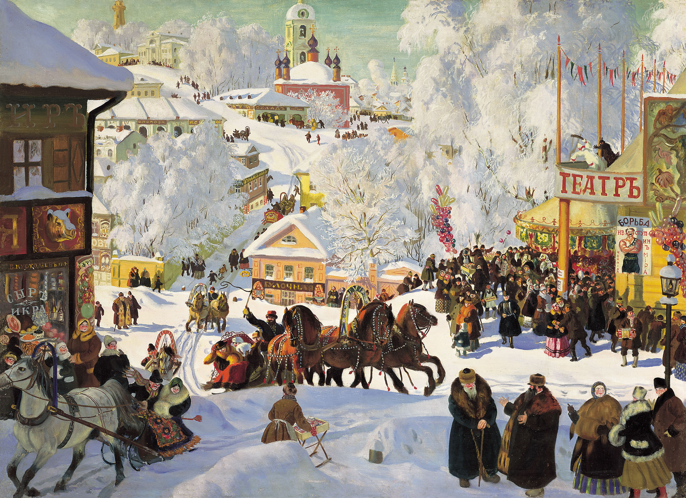

Maslenitsa (aka as Butter Week, Shrovetide) is originally a pagan holiday. Maslenitsa symbolizes the transition of winter into spring. Among Maslenitsa traditions are the Maslenitsa effigy, sleigh rides, and festivities. Russians bake pancakes (bliny).
Maslenitsa Days
On Wednesday, sons-in-law may visit their mother-in-law, who has prepared pancakes and invited other guests for a party.
Thursday may be devoted to outdoor activities. People may take time off work and spend the day sledding, ice skating, conducting snowball fights and with sleigh rides.
Friday, sons-in-law invites their mothers-in-law for dinner.
Sunday of Forgiveness. The last day of Cheesefare Week is called "Forgiveness Sunday" (Прощёное воскресенье). Relatives and friends ask each other for forgiveness and might offer them small presents.

Fig.1 artist Boris Kustodiev. Maslenitsa (1916).